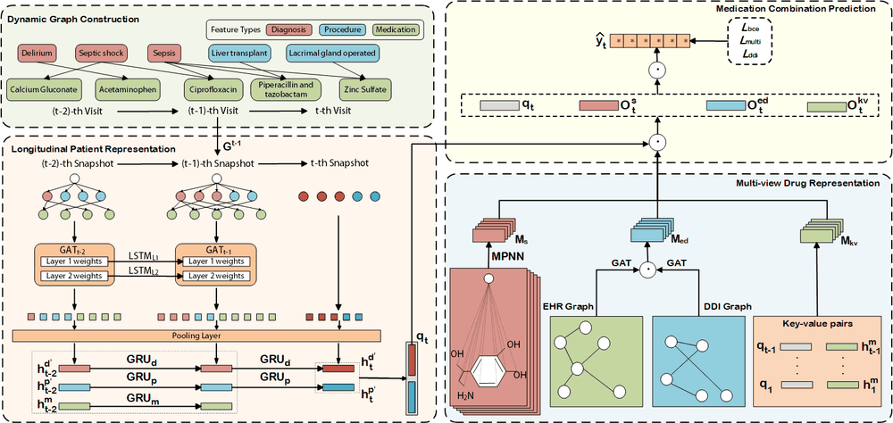
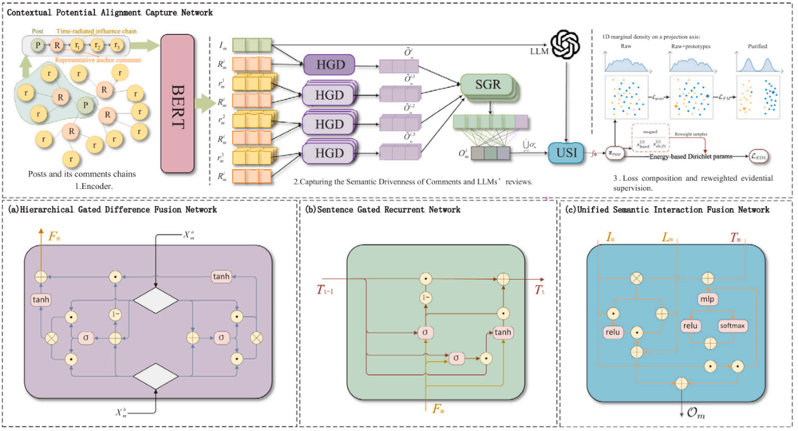
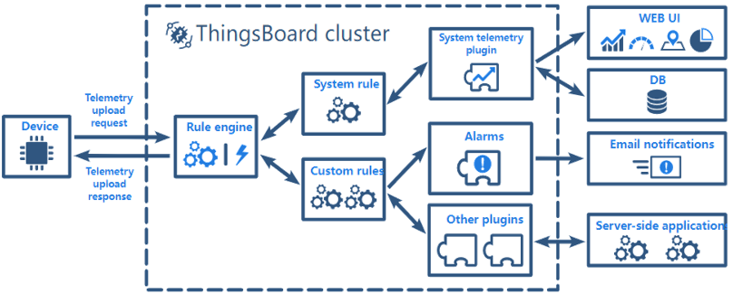
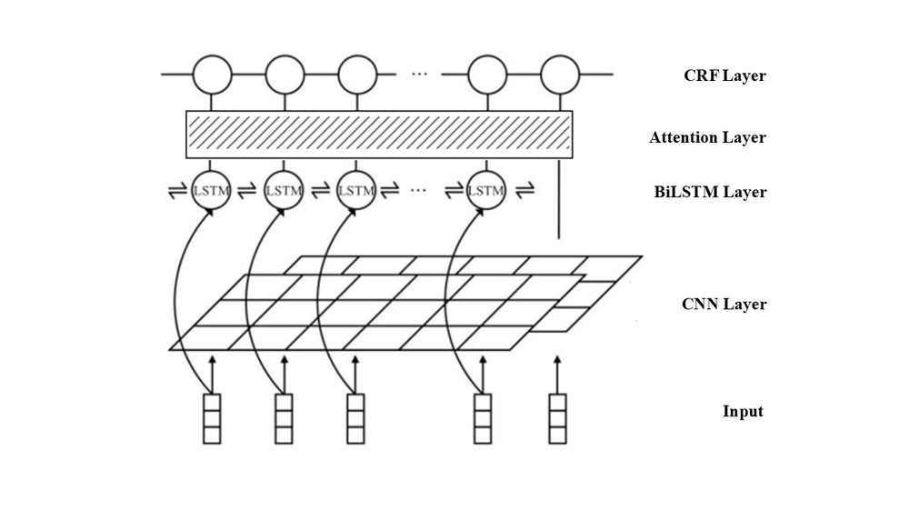
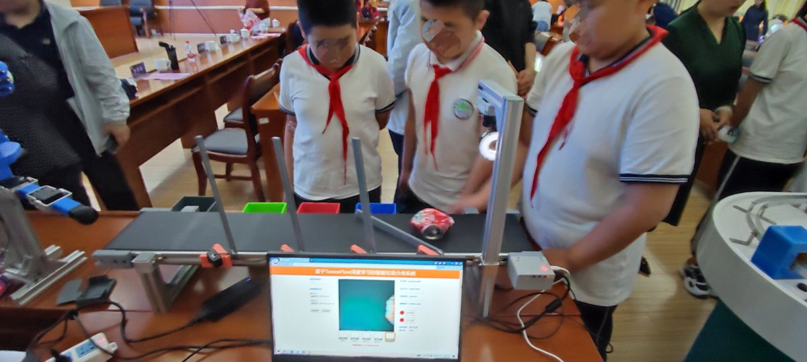
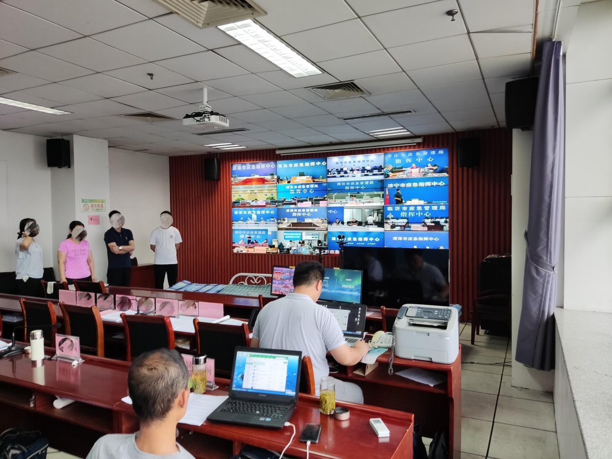

Research Experience

This project aims to construct a dynamic graph neural network by integrating multi-source electronic health record data. We apply a deep learning-based recommendation algorithm to recommend accurate and safe drug lists to doctors, thereby achieving personalized and precise drug recommendations.

This project mainly studies how false news on social media enhances its spread ability by using ambiguous descriptions and user comments. We proposes an effective detection model and verifies through experiments the role of ambiguous descriptions in triggering sarcastic comments and their differences in various types of news.

This project introduces artificial intelligence technology and edge computing framework to improve the intelligent management of classroom teaching resources and environment, and intends to build an intelligent classroom management architecture that supports equipment management, environmental monitoring, usage query and other multi-directional and integrated edge cloud efficient collaboration.

This project intends to take the field of music as an example, transplanting the natural language processing and automatic construction technology of knowledge graphs to the NAO robot, enabling the NAO robot to accurately identify the music features in the input speech, complete the designated music playback commands, and thereby achieve human-machine voice interaction for music playback.
Professional Experience

Assisted in the design of a computer-vision based waste management system and colour sorting devices using the TensorFlow framework.

Assisted in designing and coding a small system for automating duty scheduling.